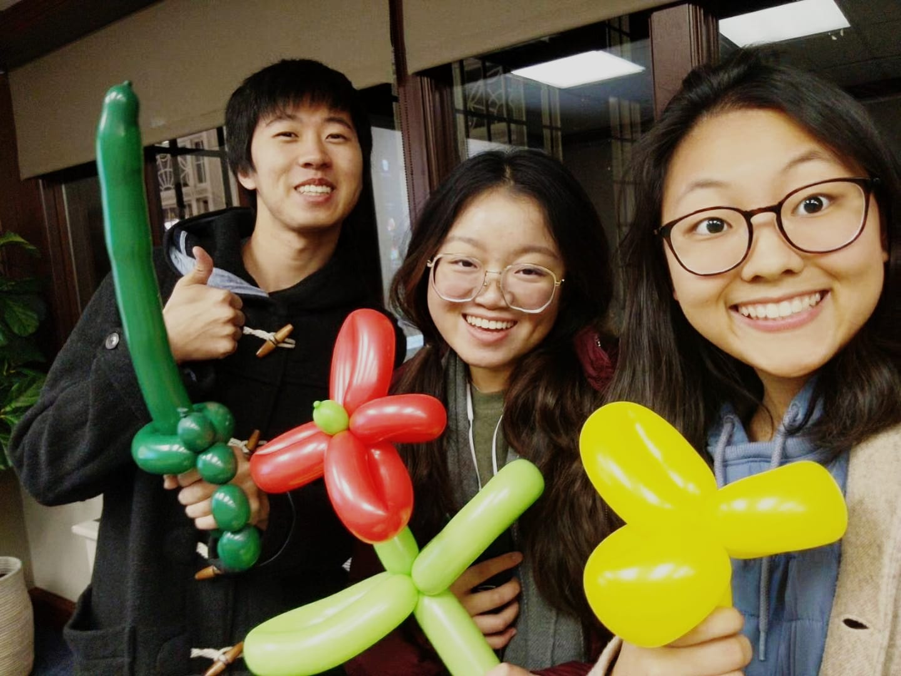

And I study Public & Professional Writing and Chinese.
Field or Career
I started college wanting to pursue a pre-Physician Assistant (PA) track, with a degree in history. In 2019, I studied in Taiwan for a semester. Currently, I study Public and Professional Writing and Chinese, with a minor in Korean and certificate in Asian Studies.
Family and Home
In my family, there's my mom and dad, an older sister, and my mom's older brother. Our chief source of quality time together is eating together, whether that's eating home-cooked Cantonese style meals or driving an hour on weekends to the nearest dim sum parlor in Philadelphia. My parents immigrated from Hong Kong in the 80s and 90s.
Community

When I have time, I like to write calligraphy, make hand-made gifts, and send snail mail to friends and family. I connect a lot with people who share similarly quirky interests. To me language also plays a key role in defining my communities. I speak six languages, but really only four of them with any degree of fluency. More recently, working as an interpreter and translator for Mandarin/Cantonese, I’ve been able to meet all kinds of people, all with fascinating stories to tell. This especially has broadened my sense of community.
However, it was probably the community I met in Taiwan that has defined me most as a person. While abroad, I met and became close with members of a small Christian fellowship in Taipei, people who became my mentors, family members, and friends, with whom I continue to stay in touch with today.
Field of Study
Like I mention above, I’m currently studying in two different fields: Chinese and professional writing, with a surprising amount of overlap between the two. This comes in terms of research and writing processes. In the Chinese department, I research how Chinese scholars in the 1980s and 1990s shift their perceptions and narrative of China. I approach this through a distant reading of a controversial Chinese documentary from 1988 called River Elegy.
In terms of professional writing, the PPW program has afforded me opportunity to dabble in a lot of different fields within professional writing. Of these, I would situate myself in the technical writing and design field.
Why UX design and usability testing?
My interest in user-centered design and user research stems from two things: 1) technical writing course last semester and 2) my current internship in Research and Design at a non-profit called Libraries Without Borders.
It started with Don Norman, but my interest really set off with my inovlvement in designing the WALI Community Toolkit and the related Health Literacy training course.
My role: research, design, writing (what kind of content are relevant, how to deliver this content). What really excites me about the process because it integrates writing with design, taking strategies of technical communication and graphic design to make content that’s useful and helps people achieve the goals they want to achieve.
What I don’t do a lot of: user testing/research and what I hope to take away from this class
Where do I want this knowledge to take me?
Information design, content design, UX writing, social design
Translating design thinking into developing and evaluating training programs: human resources development